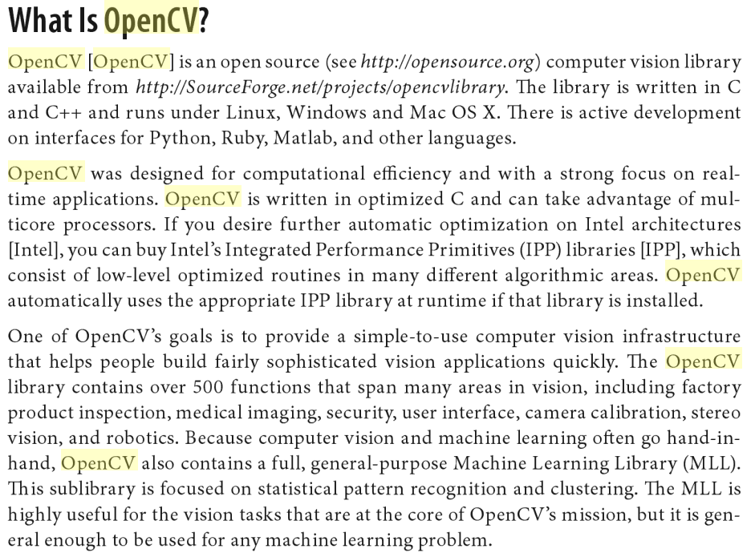

111 程式設計期末專題
109611066 吳典謀
問題
一份文件

這是一張圖片，不是「文件」
怎麼轉換成真正的文件？
有哪些文件格式？
PDF
DOCX
HTML
...
這些其實都是「純文字」
我們要做的是「純文字」轉換
要將任意格式的文件變成其他格式，
我們需要先將它轉換成「純文字」
程式目的
圖片是一種最難轉換成「純文字」的格式
我想要做的圖片轉換成純文字的程式
使用到的函式庫
OpenCV
圖片導入
影像處理
安裝
參考
tutorial_linux_install
一般的 cmake 安裝方式 ```bash # Install minimal prerequisites (Ubuntu 18.04 as reference) sudo apt update && sudo apt install -y cmake g++ wget unzip # Download and unpack sources wget -O opencv.zip https://github.com/opencv/opencv/archive/4.x.zip unzip opencv.zip # Create build directory mkdir -p build && cd build # Configure cmake ../opencv-4.x # Build cmake --build . ```
Extra Steps
將 opencv 的所有 library 包成一個 package，適合編譯
參考
Package opencv was not found in the pkg-config search path - stackoverflow
```bash # /usr/local/lib/pkgconfig/opencv.pc prefix=/usr exec_prefix=${prefix} includedir=${prefix}/include libdir=${exec_prefix}/lib Name: opencv Description: The opencv library Version: 2.x.x Cflags: -I${includedir}/opencv -I${includedir}/opencv2 Libs: -L${libdir} -lopencv_calib3d -lopencv_imgproc -lopencv_core -lopencv_ml -lopencv_features2d -lopencv_objdetect -lopencv_flann -lopencv_video -lopencv_highgui -lopencv_imgcodecs -lopencv_videoio ```
如此一來，就可以用 pkg-config 快速引入 許多 library ```bash g++ -o test test.cpp `pkg-config --cflags --libs opencv` ```
Tesseract
文字辨識
本來是 command line 程式，但有提供 api
參考 [Compilation guide for various platforms - Tesseract documentation](https://tesseract-ocr.github.io/tessdoc/Compiling.html#linux) 利用現成的 apt package ```bash sudo apt install tesseract-ocr sudo apt install libtesseract-dev ```
程式碼
## 專案架構 ```bash Optimal-Doritos |-- reveal.js-master # 這份slide | |-- index.html |-- cutter.cpp # 物件 cutter 的實作 |-- cutter.h # 物件 cutter 的宣告 |-- main.cpp # 主程式 ``` 部份較不重要檔案沒有列出
## Options 為了功能開發方便提供許多選項，可以用 `--help` 查看 ```bash $ ./main --help Usage: Convert single image: ./main --single-image --path <image path> Convert single image with cut: ./main --single-image --use-cut --path <image path> ```
## `main.cpp` 的重要部份 ```cpp cout << "Converting image: " << path << endl; cv::Mat image = cv::imread(path); Cutter cutter(image); cv::Mat document = cutter.cut(); string text = cutter.ocr(); cout << "Text: \n" << text << endl; cv::imwrite("document.png", document); cout << "Document image saved to document.png" << endl; return 0; ```
## `cutter.h` `cutter.h` 提供了 `Cutter` 這個 class，用來處理圖片 ```cpp class Cutter { public: Cutter(); Cutter(const cv::Mat &image); ~Cutter(); // Import original image. // Input: original image. // Output: none. void importImage(cv::Mat &image); // Cut document from original image. // Input: None. // Output: document image. cv::Mat cut(); // Output the content of the document using OCR. // Input: None. // Output: content of the document. string ocr(); private: cv::Mat originalImage; cv::Mat documentImage; string content; }; ```
## 程式執行結果 ```bash $ ./main Use --help to see usage $ ./main --help Usage: Convert single image: ./main --single-image --path <image path> Convert single image with cut: ./main --single-image --use-cut --path <image path> $ ./main --single-image --path opencv-document.png Converting image: opencv-document.png Estimating resolution as 211 Text: What Is OpenCV? OpenCV [OpenCV] is an open source (see http://opensource.org) computer vision library available from http://SourceForge.net/projects/opencvlibrary. The library is written in C and C++ and runs under Linux, Windows and Mac OS X. There is active development on interfaces for Python, Ruby, Matlab, and other languages. OpenCV was designed for computational efficiency and with a strong focus on real- time applications. OpenCV is written in optimized C and can take advantage of mul- ticore processors. If you desire further automatic optimization on Intel architectures [Intel], you can buy Intel’s Integrated Performance Primitives (IPP) libraries [IPP], which consist of low-level optimized routines in many different algorithmic areas. OpenCV automatically uses the appropriate IPP library at runtime if that library is installed. One of OpenCV’s goals is to provide a simple-to-use computer vision infrastructure that helps people build fairly sophisticated vision applications quickly. The OpenCV library contains over 500 functions that span many areas in vision, including factory product inspection, medical imaging, security, user interface, camera calibration, stereo vision, and robotics. Because computer vision and machine learning often go hand-in- hand, OpenCV also contains a full, general-purpose Machine Learning Library (MLL). This sublibrary is focused on statistical pattern recognition and clustering. The MLL is highly useful for the vision tasks that are at the core of OpenCV’s mission, but it is gen- eral enough to be used for any machine learning problem. ```
謝謝大家的聆聽